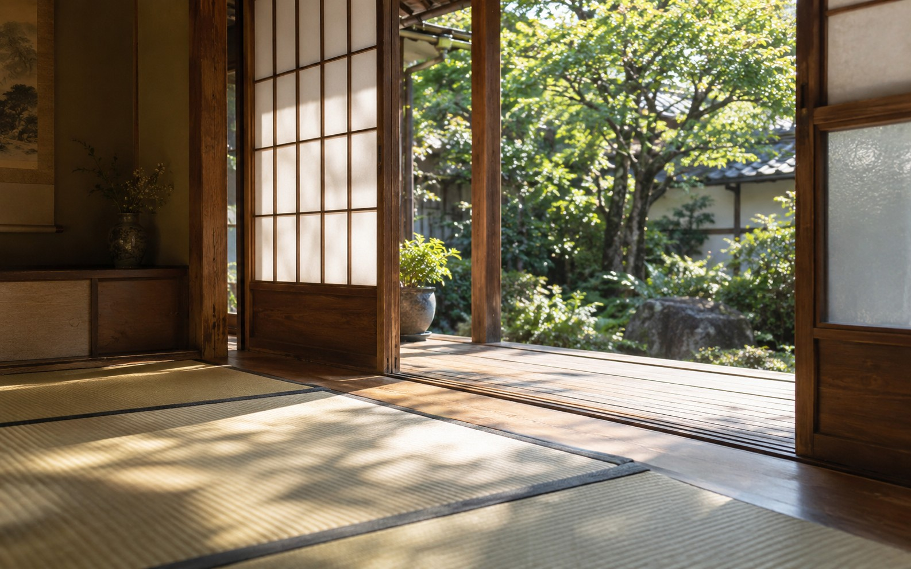
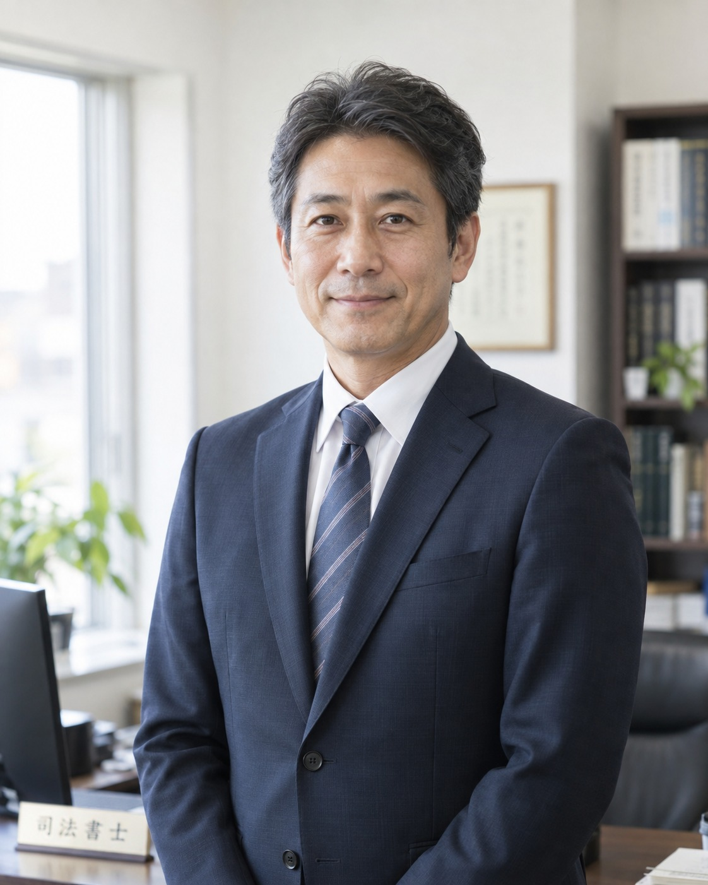

親の家の名義がそのまま
相続の登記・
不動産の名義変更
戸籍を集め、相続人を確定し、遺産分割協議書をつくり、法務局に申請するところまで、一式をお引き受けします。戸籍は亡くなった方の出生から死亡まで、切れ目なくそろえる必要があり、本籍が動いていれば複数の役所に請求することになります。
- 何代も前の名義のまま
- 相続人が遠方・連絡がつかない
- 空き家をどうするか決めたい
大阪・谷町の司法書士事務所

お困りごとから
戸籍を集め、相続人を確定し、遺産分割協議書をつくり、法務局に申請するところまで、一式をお引き受けします。戸籍は亡くなった方の出生から死亡まで、切れ目なくそろえる必要があり、本籍が動いていれば複数の役所に請求することになります。
定款のつくり方から法務局への登記まで代行します。役員の変更、本店移転、増資など、設立したあとの手続きもお受けします。
元気なうちに決めておくと、遺されたご家族の手続きやご負担が、ぐっと軽くなります。判断が難しくなったあとの支え方もご相談ください。
取扱業務
相続した土地・建物の名義を、相続人の方へ移す手続き。戸籍の収集、相続関係説明図、遺産分割協議書の作成まで含めてお受けします。
売買・贈与・財産分与による名義変更、住所や氏名の変更、抵当権の設定と抹消。住宅ローンを完済したときの抹消もこちらです。
株式会社・合同会社の設立、役員変更、本店移転、目的変更、増資、解散・清算。
公正証書遺言の文案づくりと証人、自筆証書遺言の保管制度のご案内、家族信託のご相談。
後見開始の申立て書類の作成、後見人への就任。ご本人の財産と暮らしを守る手続きです。
簡易裁判所の代理、裁判所に出す書類の作成。
ご相談の流れ
お電話かフォームから。「何から聞けばいいか分からない」で大丈夫です。
事務所・オンライン・お電話で承ります。いまの状況をうかがい、必要な手続きと費用、期間をお伝えします。
金額を書面でお出しします。ご納得いただいてから着手します。
役所で取得できる戸籍や書類は、こちらでお取り寄せします。法務局へ申請し、完了した書類をお渡しします。
費用の目安
ご相談のときに、この表をもとにお見積りをお出しします。事前にお伝えしていない費用を、あとから請求することはありません。
| 相続登記（不動産1件・相続人3名まで） | 77,000円〜 ＋登録免許税（固定資産評価額の0.4％） |
|---|---|
| 戸籍の収集（1通あたり） | 1,650円 ＋役所へ支払う実費 |
| 遺産分割協議書の作成 | 33,000円〜 |
| 相続人申告登記 | 22,000円〜 |
| 会社設立（合同会社／株式会社） | 66,000円／99,000円〜 ＋登録免許税・定款認証費用 |
| 遺言書の文案作成 | 55,000円〜 |
| 抵当権の抹消 | 13,200円〜 |
すべて税込の報酬です。登録免許税・郵送料・交通費などの実費は別にいただきます。相続人が多いときや、不動産がいくつもの市区町村にまたがるときは金額が変わります。その場合はお見積りの段階で必ずお伝えします。

事務所のこと
相続のご相談は、書類の話だけでは終わりません。誰がどこに住んでいて、これまで何があって、これからどうしたいのか。そこが決まらないと、登記の形も決まらないからです。
そのため初回は、手続きの説明よりも、お話をじっくりうかがうことに時間を使います。そのうえで、いまやるべきこと・急がなくていいこと・ご自身でできることを分けてお伝えします。
司法書士 川瀬 直人
よくあるご質問
お手元にあるものだけで大丈夫です。固定資産税の納税通知書、権利証（登記識別情報）、亡くなった方の戸籍などがあればお持ちください。何も無くてもご相談いただけます。
話し合いがまとまっていない段階でもご相談ください。ただし、相手方との交渉や裁判の代理は弁護士の業務になります。どこまでを司法書士がお手伝いできるか、最初にはっきりお伝えします。
何代も前の名義のままでも手続きできます。相続人の人数が多くなるぶん時間はかかりますので、早めにご相談ください。
事前にご連絡いただければ、土曜の午前と、平日の19時まではお受けしています。オンラインでのご相談も可能です。
郵送とオンラインで完結できる手続きも多くあります。大阪府全域のほか、兵庫・京都・奈良のご相談もお受けしています。まずはお電話でご事情をお聞かせください。
ご相談の予約
相続も会社の登記も、早めにご相談いただくほど、取れる選択肢が広がります。まだ何も決まっていない段階のご相談がいちばん多いので、遠慮なくお電話ください。